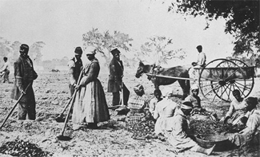
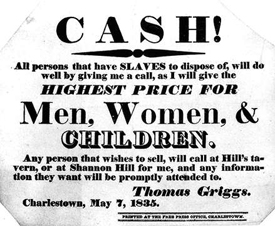
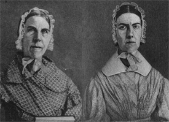
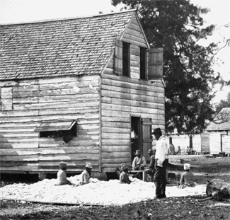
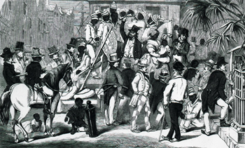

|
Slavery in South Carolina was a local institution that changed over time. Early
in its history, Indian slavery, black slavery, and white indentured servitude
existed side by side, but by the antebellum period black slavery predominated.
These changes reflected important fluctuations in the importation of slaves from
Africa. After the initial transfer of slavery and plantation models from
Barbados, South Carolina slaveholders turned to Africa to supply their need for
black slave labor. Few blacks, for example, were imported from the West Indies
because South Carolinians suspected them of being the unwanted, the ailing, and
the rebellious. The creolization process also brought changes over generations.
At first brutal in form, slavery in South Carolina became more humane in its
operation, although ironically there seemed to be more hope of emancipation in
the colonial period and less in the antebellum period. The hopes of the American
Revolution for freedom withered amid the attack of the abolitionists. On the eve
of the Civil War a re-enslavement crisis resulted because white laborers
resented the competition of free black workers. What finally fixed the
institution on the state was not merely the need for labor but the profitability
of the system, with its concomitant cultural ramifications. So embedded were
these in the social fabric of South Carolina that they could only be dislodged
by the havoc of the Civil War.
South Carolina was to be a staple-producing province. The articles of trade
were in succession deerskins, cattle, naval stores, rice, indigo, and much later
cotton. There was need for a labor force. Indians as hunters and burden bearers
were adequate for the trade in deerskins, but black slaves more quickly adapted
to cattle herding and the naval stores industry and by the 1730s became
absolutely necessary for the culture of rice.
But why black slaves? The example of Barbados was the prime model and the
greatest influence. South Carolina's first settlers came by way of that island,
and among those arriving in 1690 were the first black slaves. The first slave
code of 1690 was adapted from the code of Barbados. The crucial determining
factors, however, were climate, disease, and skills. Historian Peter H. Wood has
shown that African slaves became indispensable because of their ability to exist
in the hot humid climate, their relative immunity to malarial fevers, and the
skills that they brought with them, particularly herding cattle and planting
rice. The blacks also were superb boatmen, acting as pilots and patroons in the
intricate low-country estuaries. Indian slavery that resulted from the Indian
wars reached its peak in 1724 and 1725, but the Indians were decimated by the
diseases transmitted by the Europeans and were not inured to the hard labor that
the Africans could endure. By the time of the rice boom of the 1730s African
slavery had become fixed upon South Carolina society, although a black majority
had emerged there as early as 1708.
|

Slaves plant potatoes in South Carolina
|
In the beginning the need was to wrest a profit from the land. There was not
much time for thinking of whether slavery was right or wrong. Such conflicting
doubts emerged out of the Great Awakening of 1740, which in South Carolina may
have come as a distinct aftermath of the Stono Rebellion of 1739. The ideas that
would eventually destroy slavery percolated through American society with John
Woolman and the Quakers as early as the 1750s, though there was no intention on
either side during the American Revolution to free the slaves as a result of
victory. The slaves that the British took away during the Revolution (anywhere
from 6,000 to 25,000 from South Carolina) were not given their freedom, but were
taken mainly to the West Indies where they were sold into slavery again or put
to work on land acquired by the American Loyalists. Only a few, such as those
who went to Nova Scotia, gained freedom, and then only with the financial aid of
philanthropists in England who transported the blacks to the newly created
territory of Sierra Leone.
In 1790 three Charleston free blacks petitioned the state legislature asking
that they be recognized as citizens of South Carolina. The petition was denied.
As late as 1857 the Supreme Court of the United States stated that free blacks
were not citizens, proof of the ambiguous status of free blacks throughout the
antebellum period. On the other hand, the founding fathers of South Carolina
felt confident that slavery would come to an early end. They could not predict
in 1787 the eventual growth and spread of the cotton culture. But they did at
least take tentative steps to end the foreign slave trade which by the
Constitution could and did end in 1808, a year which in one sense represents a
great dividing line in the history of slavery. It cut the American black
population off from Africa and forced a creolization that as early as the 1820s
had produced uniquely black South Carolinians.
Each generation brought a different mind-set for the black slaves as well as
for their white masters. Historian Herbert G. Gutman, in his study of the black
family, pointed out that each generation passed on to the next a sense of family
and of place from which evolved a new Afro-American culture. Gutman's analysis
of the births, baptisms, marriages, and deaths of three generations of slaves on
Santee River plantations revealed a culture capable of passing on its
achievements and its accommodations to the next generation.
Historian Philip D. Morgan has described tendencies that seemed to be
fracturing slavery in eighteenth-century Charleston. Opportunities existed for
slaves in the urban center that were lacking in the countryside. There was a
"measure of freedom involved in hiring and living out" that was highly valued by
the slaves. Fishing and butchering, portering and hauling, were trades dominated
by slaves. A skilled slave could clear a profit of £250 in 1760. Even the loss
of runaways could be absorbed. According to Morgan, the "ability of slaves to
enjoy a change of scene, visit a relative, or go underground probably siphoned
off as much potential disorder as it created." Black women outnumbered black
men. Many thus lived beyond the constant observation of whites. Black potential
resentment was deflected by their own communal outlets. Yet, in the end, these
hard-won gains probably bound the blacks more completely to slavery. The
apparent openness meant that there were differences among the blacks
themselves--of color, of trade, of property, of origin, of arrival, and of
freedom. This fragmentation, plus the fact that the blacks in Charleston were
only a slight majority (not an overwhelming majority as in the country), meant
that Charleston whites were less fearful, more certain of control in times of
danger. Slavery was disintegrating in Charleston as the eighteenth century
progressed, but ironically the very disintegration made it easier for slavery to
exist in the city. Morgan concludes "that slavery in Charleston was more, not
less, secure than it was in the surrounding countryside." But these
eighteenth-century signs of a loosening of the grip of slavery were blocked by
the appearance and spread of cotton.
It seemed that slavery would be cut off from its source and that it would be
confined to the coastal regions where rice could be grown, but the introduction
of cotton brought about the spread of slavery throughout the South. The black
slaves taken to the Bahamas by Loyalists in the 1780s produced by the end of
that decade a very profitable crop of sea-island cotton. Seeds and know-how were
sent back to the Loyalists' friends and relations in South Carolina and Georgia.
Abraham Eve invented a roller gin for the fine sea-island cotton that was used
in the Bahamas and on the Sea Islands. Eli Whitney invented a sawtoothed gin in
1793 for the coarser, upland cotton. As a result, cotton culture swept into the
interior, and the institution of black slavery followed.
|

An advertisement seeking South Carolina slaves
for purchase.
|
Black slaves had appeared in the up-country as early as 1716, accompanying a
military expedition sent against the Cherokees. By the 1760s slaves composed
approximately 10 percent of the population. Many of these were undoubtedly
runaways, individuals who could perhaps assume a new identity amid the
turbulence of the frontier. In her analysis of gangs and banditti, historian
Rachel Klein has proved their presence. More organized settlement of slaves into
the interior came with Thomas Sumter's bounty scheme for raising troops--each
recruit who signed up received a slave--and with Wade Hampton's spiriting of
slaves from the low country amid the immediate post revolutionary chaos. The
Regulator Movement of the 1760s had been designed not only to eliminate crime
but also to find a labor force for the farmers who wanted to advance into the
planter class. This transformation of farmer into planter proceeded with speed
IR the three decades after the Revolution. But it was not until the period
1800-1810 that slavery appeared in its mature form in the interior. The slave
trade was reopened in 1803 and remained open until a federal law brought an end
to the foreign slave trade on January 1, 1808. Some 45,000 slaves were
introduced into South Carolina in these years and most of these undoubtedly
found their way to the new up-country cotton plantations. While a white majority
existed in the state in the 1790s, by the 1820s a black majority had returned
once more. By then the black majorities of the coastal parishes reached 85 to 88
percent of the population. But black slavery had also spread throughout the
state, except for the districts in the foothills of the mountains.
From the moment the slaves arrived in colonial South Carolina they yearned
for freedom. While running away could not overturn the system, a concerted
effort planned by slaves might have done so. Such concerted effort, however,
could not arise until the slaves could communicate among themselves. They had
come from different parts of Africa and spoke varying tongues. The rise of a
pidgin language among the slaves facilitated the Stono Rebellion of 1739, the
first and perhaps the last actual slave uprising with a plan and a program.
Although slaves were confined to plantations, there were constant opportunities
for movement and communication: messages to be carried, boats to be navigated,
militia duty to be performed, fighting to be done. In this fashion, Gullah--a
corruption of European tongues and African dialect--emerged by mid-century and
provided the bondsmen a means to communicate their plot. The magnet in 1739 that
drew the slaves of Colleton County was St. Augustine. A Spanish proclamation
promised freedom to those bondsmen who reached Florida. Fort Moosa, a settlement
outside the walls of St. Augustine, was a colony of free black settlers. Only
quick action on the part of Lieutenant Governor William Bull suppressed the
revolt.
The basic code to regulate the slaves was adopted in 1740, a result of the
Stono Rebellion. That code, which lasted in its fundamental principles until the
end of slavery in 1865, defined the status of the slave. If black, the law
assumed that the person was a slave; if Indian, it assumed the person was free
unless there was proof of enslavement. The basic rights and privileges of both
slave and free men were stated in that legislation. The code also established
South Carolina's slave patrol system, which also was to remain a fixture of
South Carolina slavery until emancipation. At each muster of militia companies
some men were selected for patrol duty until the next muster. They were
instructed to ride through the country and challenge all slaves found off
plantations. The patrollers could stop and inquire, search and seize, and even
punish for violations. According to the 1740 code, slaves were to be tried in a
court of justices and freeholders. No record of the trial was to be kept and
punishment ensued immediately without any higher approval, unless the sentence
was death.
|

Sarah (left) and Angelina Grimké
|
The revolution in Santo Domingo, one of the reverberations of the French
Revolution, had a profound impact upon the minds of both black and white South
Carolinians. More refugees from Santo Domingo flocked into Charleston than into
any other U.S. port. These included white families, mulatto families, and black
slave families. The establishment of the black Republic of Haiti provided what
white South Carolinians considered to be a dangerous example of a revolt.
Consequently, in the mid-1790s Charlestonians adopted a series of city
ordinances to control both mulattoes and black slaves. Segregation of the town
theaters took place in 1795. Three years later the state legislature passed a
law to control the movement of all blacks and free persons of color in and out
of the state. In 1804 a city ordinance placed a curfew on free blacks in
Charleston; in 1806 an ordinance stated that a white person had to be present
when seven or more free blacks assembled. The state also made it far more
difficult to emancipate a slave. A law of 1800 prevented manumission by will or
deed and required that a group of citizens certify that the freed person could
support his or her family. Over the next two decades laws were tightened so that
only the legislature could grant manumission. These city ordinances and state
laws expressed the growing concern of whites to control the free black
population, just as the 1740 code had been enacted to regulate the slaves.
It was during this period that Denmark Vesey, a slave who labored as a
sailor, won a lottery and bought his freedom. Having sailed in the West Indies,
Vesey knew of the Haitian revolution. He also was aware of the pressure of the
laws and ordinances upon his own people, as well as of the Missouri debates that
had raised the question whether free blacks had the privileges and immunities of
citizens as guaranteed in the U.S. Constitution. In June 1822 Vesey and his
co-conspirators from Charleston and the surrounding countryside were ready to
rise up in rebellion, but a slave loyal to his master betrayed the plot.
Eventually Vesey and thirty-six other persons were executed. The conspirators
presumably had planned to sail to Haiti once freedom had been won in South
Carolina.
To counter this threat, and to prevent the flow of information through the
port of Charleston into the local black community, in 1822 and 1823 the state
legislature passed the Seamen Acts. Under these laws free black sailors on
vessels coming into the port were to be jailed while the vessel was docked. If
the captain of the ship could not pay for the room and board of his sailors, the
blacks could be sold into short-term slavery to pay for these services. The
spirit of such laws contributed to the fear of re-enslavement among Charleston's
free black community. After June 1823 free blacks could no longer come and go,
and each had to secure a white guardian to vouch for his reputation. To assure
added police control of slaves and free blacks, a new guardhouse was built in
Charleston in 1825. In 1842 this structure became the Citadel, a military
college visibly representing the force and power of the white community.
South Carolinians also took steps to block the circulation of abolitionist
literature, including David Walker's inflammatory Appeal (1829) and
William Lloyd Garrison's newspaper, The Liberator. In 1835, for example,
Charlestonians raided their city's post office to prevent distribution of
antislavery publications. Several years earlier the level of intolerance was so
great in Charleston that two prominent antislavery spokeswomen, Sarah and
Angelina Grimke, moved to Philadelphia to attack slavery at a safer distance.
Great Britain's decision in 1833 to free the slaves in the West Indies added to
the uneasiness and apprehensions of South Carolina slaveholders. In 1834 the
state tightened its slave code, making it unlawful to teach blacks, free or
slave, to read or write. As a result Thomas S. Bonneau was forced to close his
famous school and one of his former pupils, Daniel A. Payne, who himself had
established a school for blacks in Charleston, moved to the North. Amid this
rigidifying climate, it was not surprising when John C. Calhoun rose on the
floor of the U.S. Senate in 1837 to declare that slavery was "a positive good."
In 1837 another influential South Carolinian, Chancellor William Harper,
published his Memoir on Slavery. According to Harper, slavery lay at the
core of all civilization. "If any thing can be predicated as universally true of
uncultivated man, it is that he will not labor beyond what is absolutely
necessary to maintain his existence." "He who has obtained the command of
another's labor, first begins to accumulate and provide for the future, and the
foundations of civilization are laid." Harper went on to challenge the statement
in the Declaration of Independence that all men were born free and equal. "Is it
not palpably nearer the truth to say that no man was ever born free, and that no
two men were ever born equal? Man is born in a state of the most helpless
dependence on others." Harper's rationalizations went so far as to assert that
"Servitude is the condition of civilization." "It is by the existence of
slavery, exempting so large a portion of our citizens from the necessity of
bodily labor, that we have a greater proportion than any other people, who have
leisure for intellectual pursuits, and the means of attaining a liberal
education." These thoughts were a long way from the professed egalitarianism of
1776 and help to explain the ideological underpinnings of slavery in the last
two decades before the Civil War.
|

A South Carolina cotton plantation
|
Although these dogmas strengthened the resolve of the planter class to
maintain the peculiar institution, there also were attempts to make slavery less
severe. Such contradictions and ironies were part and parcel of the human
dimension of slavery. In 1820, for example, Governor Thomas Bennett urged the
legislature to reform the slave code because, he said, slavery in the nineteenth
century differed from the institution that had existed in the eighteenth
century. In 1821 the legislature made the crime of murdering a slave punishable
by death, thereby providing bondsmen protection previously denied them. When the
court of appeals interpreted the law in 1834, the judge who delivered the
opinion wrote: "This change I think made a most important alteration in the law
of his [the slave's] personal protection. It in a criminal point of view
elevated slaves from chattels personal to human beings in the peace of society."
In 1834 the South Carolina legislature also prohibited the branding of slaves.
The blacks themselves were partly responsible for the changes in South Carolina
slave law and treatment. By the 1820s black South Carolinians had forged their
own Afro-American society, with its own integrity, its own reason for being. The
growing distance from Africa meant a greater reliance on things known in the New
World, not remembered from the Old World. Though this distancing had been
interrupted somewhat by the importation of some 45,000 slaves between 1803 and
1808, South Carolina slaves established their own unique slave community, a mix
of Africanisms and characteristics unique to American experience. Circumstances
required that these blacks live and labor among whites. As elsewhere, the
day-to-day interaction of blacks and whites in slave society was characterized
by varying degrees of stress and strain and give-and-take. Blacks, however,
never were totally absent from the dynamics of decision making.
Black preachers tended to provide both secular and religious leadership
within the South Carolina slave community. By the late 1780s Francis Asbury had
provided religious instruction to the slaves, but after the Vesey plot whites
became increasingly concerned over the nature of this training. Nevertheless,
planters invited Methodist and Baptist clergymen to preach to their slaves. On
the largest plantations planters provided chapels with regular Sunday schools
and church services for the bondsmen. Slave children commonly were drilled in
the catechism, while the adults were indoctrinated with the message of obedience
to masters. The Christian message had a strong appeal to the slaves. The
Methodist hymns were rapidly absorbed into African ritual songs, dances, and
shouts. The belief in the second coming of Christ offered slaves a message of
hope, a promise of salvation, of ultimate emancipation. Significantly, blacks
transformed the radical evangelicalism of the late eighteenth century into their
Afro-American faith, a creed that served them well for life after emancipation.
Changes in the use and organization of South Carolina's slave labor force
also paved the way for self-assertion and later emancipation. Early in the
state's history slaves were called upon to perform brutal work-clearing stumps
from swamps, building dikes, and digging ditches. By the early nineteenth
century, however, except for the last rice frontier along the South Carolina
side of the Savannah River, most of this work had been done. The same was true
for the clearing of up-country lands. Even more crucial, though, was the
development of the task system on South Carolina's rice plantations. Some
estimates indicate that by three o'clock in the afternoon many slaves had
completed their assigned tasks for the day and thus could use the remaining
daylight hours to raise and sell vegetables, to fish, to tend farm animals, or
to relax. The task system enabled slaves to acquire private property, which
occasionally passed from one generation to another. This represented a small but
significant measure of freedom. The task system helped to prepare the slaves for
freedom and shaped the market economy that flourished around Charleston and
Savannah. In the up-country where the system of gang labor was more common,
these changes had far less impact. The task system permitted low-country slaves
to carve out space and meaning for themselves. Their assertiveness represented
yet another prelude to freedom.
|

An 1856 slave sale in Charleston, South Carolina
|
Nowhere was the sense of independence more pronounced than in the case of
South Carolina's free black community. Although few in number (1,801 in 1790 and
9,914 in 1860), their history reveals the contradictions inherent in the slave
system. The story of William Ellison of Stateburg can stand in part for the
story of South Carolina's free blacks. Ellison, the mulatto son of a Fairfield
District planter, had been trained as a ginwright. Upon his emancipation in
1817, Ellison began manufacturing cotton gins in Stateburg. Hard work and
catering to the needs of his white neighbors enabled him to accumulate
substantial amounts of land and slaves, eventually amassing a fortune worth
about $100,000 in 1860. Necessity forced Ellison and his family to identify more
with whites than with blacks. The re-enslavement crisis of 1859 highlighted
their nervousness and emphasized the pervasive need for accommodation. Not
surprisingly, the Ellisons supported the Confederates during the Civil War.
As early as November 1861, with the invasion of Port Royal Sound by the Union
navy, the world of South Carolina's masters, slaves, and free blacks began to be
turned upside down. While the slaves were not immediately set free, steps were
taken to secure land for them around Beaufort and other coastal areas. Planters
who could not pay the federal government's direct tax on their lands had their
property confiscated. This land then was sold, some to Northern philanthropists
who wanted to put the former slaves to work, some to Northern speculators who
were quite willing to use the former slaves as new wage slaves, and some to
blacks who had managed to save some money. What was to emerge as a postwar black
society in South Carolina had its roots in the eighteenth-century changes in
Charleston slavery, the growth of a free black society, and the changing nature
of slavery in the last thirty years of the antebellum period. So many of those
who were to guide the freedmen into the promised land came from within this
black society. Indeed, the break that came with emancipation was neither as
sharp nor as clear as a movement from slavery to freedom might imply.
Source: Randall M. Miller and John David Smith, eds. Dictionary of
Afro-American Slavery (Westport, CT: Praeger, 1997), 699-706.
|